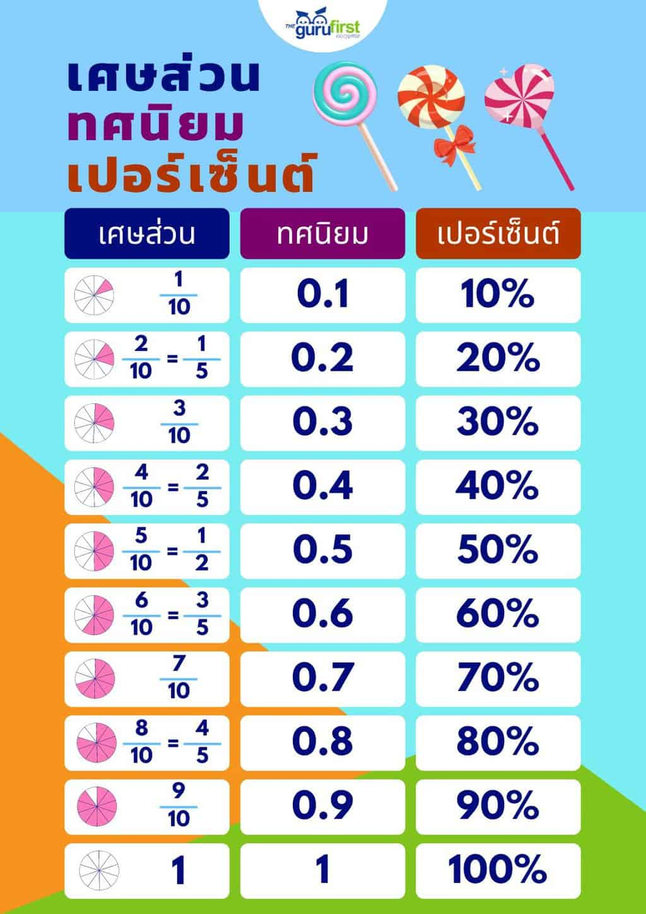

พื้นฐานคณิตศาสตร์ในชีวิตประจำวัน
จำนวนและการดำเนินการพื้นฐาน
เศษส่วน ทศนิยม และเปอร์เซ็นต์
การแก้โจทย์ปัญหา
พื้นฐานเรขาคณิต
การวัดและการคำนวณในชีวิตประจำวัน
เศษส่วน ทศนิยม และเปอร์เซ็นต์

ใช้แสดงส่วนของจำนวน เช่น 1/2 หรือ 50%